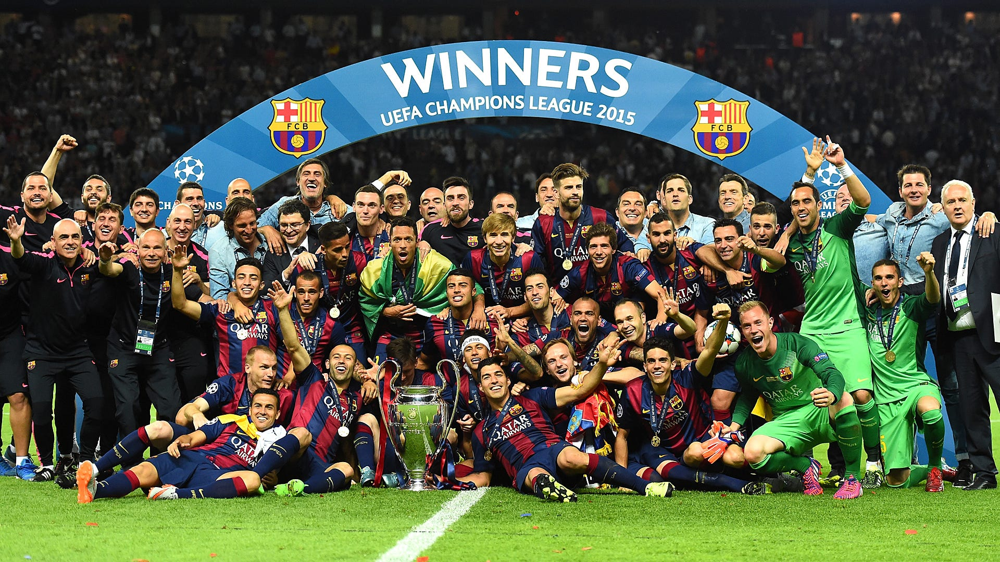

El FC Barcelona ha ganado una impresionante cantidad de títulos a lo largo de su historia.
Aquí se presenta una lista de algunos de los logros más destacados:
Títulos Estatales:
Ligas: 27 títulos en temporadas como 1929, 1945, 1991, entre otras.
Copas del Rey: 31 títulos en temporadas como 1910, 1957, 2018, entre otras.
Supercopas de España: 14 títulos en temporadas como 1983, 2016.
Copas de la Liga: 2 títulos en temporadas como 1983, 1986.

Títulos Internacionales:
Copas de Europa (Champions League): 5 títulos en temporadas como 1992, 2009, 2015.
Recopas de Europa: 4 títulos en temporadas como 1979, 1997.
Supercopas Europeas: 5 títulos en temporadas como 1992, 2015.
Copa de Ferias: 3 títulos en temporadas como 1958, 1966.

Otros Títulos:
Mundial de Clubes: 3 títulos en temporadas como 2009, 2011, y 2015.
Supercopa de Europa: 5 títulos en temporadas como 1992.
En total, el FC Barcelona ha acumulado un total de aproximadamente 125 títulos a lo largo de su historia>